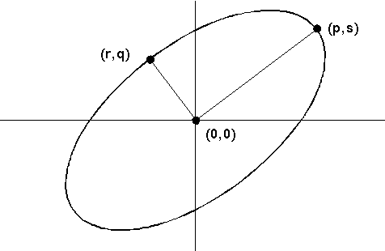

The arc primitive shares width, type, and color and mix attributes with line primitives. For example, if you use GpiSetLineType to change the line type to LINETYPE_DASHDOT, all subsequent arcs are drawn with a dash-dot line. In addition to the line attributes defined in the LINEBUNDLE data structure, arc primitives in the simple-arc family are influenced by the values in the ARCPARAMS data structure. Arc primitives in the multiple-arc family have a different method of construction and are not influenced by ARCPARAMS.
In terms of geometrical pictures, the simple arcs contain full or partial:
Circles
Multiple arcs contain:
Fillets
There are three simple arc operations that begin with a unit circle that lies at the origin of world coordinate space. This unit circle defines the current arc on which subsequent full, partial, and 3-point arcs are based. Your application can define the following attributes of the current arc with GpiSetArcParams:
GpiSetArcParams accepts as input an ARCPARAMS data structure that has four parameters (p, q, r, and s). Of the four:
The mathematical origins of the parameters are illustrated in the following figure.
The ARCPARAMS Values in World Coordinates
The values were derived from the major and minor axis of an ellipse.
An application can determine the current arc parameters with GpiSetDefArcParams which copies the current arc parameters to their corresponding fields in the supplied ARCPARAMS structure. The application can set the arc parameters with GpiSetArcParams. This function accepts as input a copy of the ARCPARAMS structure that contains the new arc parameters. The default values of p, q, r, and s, unless changed by GpiSetArcParams, define a unit circle:
The arc parameters define a transformation that is applied to each point on the perimeter of the unit circle. For any point (x,y) on the perimeter of the unit circle, there exists a new point (x',y'), as determined by the following two linear equations:
x' = p x x + r x yy' = s x x + q x y
These parameters form a 2-by-2 matrix,
┌ ┐ │ p r │ │ s q │ └ ┘
that scales and shears simple arcs.
This transformation matrix is not related to the general transformation functions that move objects through coordinate spaces. It is a special purpose matrix that transforms the shape and size of the imaginary unit circle. The transformed unit circle, also called the current arc, is then used to define the shape and size of the simple arc functions in world coordinates.
After an arc has been described in world coordinates, it can be transformed with the transformation functions, just as any other primitive can.
A transformation is orthogonal when:
(p x r) + (s x q) = 0
If orthogonal, the line from the origin (0,0) to the point (p,s) is either:
and, the line from the origin to the point (r,q) is either:
An orthogonal transformation does not guarantee that the shape of an object as defined by an application will be the same as the shape of the object on the output device. For example, if the page units in the application are PU_PELS, and the pels on the device are rectangular (but not square), calling GpiFullArc produces an ellipse-not a circle- even when the arc parameters are set to their default values.
The product of the 2-by-2 matrix multiplication influences the direction of any arc based on the current arc, except a 3-point arc. The following table illustrates this directional influence.
┌──────────────────────────────┬──────────────────────────────┐│If... │GpiFullArc and GpiPartialArc │ │ │... │ ├──────────────────────────────┼──────────────────────────────┤ │(p x q) is greater than (r x │Draw the ellipse │ │s) │counterclockwise. │ ├──────────────────────────────┼──────────────────────────────┤ │(p x q) is less than (r x s) │Draw the ellipse clockwise. │ ├──────────────────────────────┼──────────────────────────────┤ │(p x q) equals (r x s) │Draw a straight line rather │ │ │than an ellipse. │ └──────────────────────────────┴──────────────────────────────┘